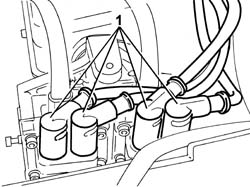
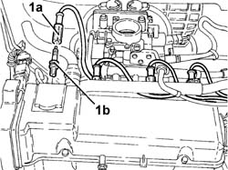

5510D14 spark plug cable lead bundle - r+r
- Path
- Procedures > 55 ELECTRICAL EQUIPMENT > 5510 ENGINE IGNITION > 5510D spark plugs and lead > 5510D14 spark plug cable lead bundle - r+r
- Kind
- repair procedure (removal / refitting; the operation number is the code)
- Applies to
- engines: 1.2 8v; all production periods
- Interactive page
- https://sloeber94.github.io/elrnDB-fDbl/en/#/2584903
Applies to: engines: 1.2 8v; all production periods
 Removing
Removing
 Refitting
RefittingDisconnect the battery negative terminal.
Op. 1048A10 AIR FILTER ASSEMBLY - R.R.
1. Disconnect the spark plug high tension leads, ignition coils side.

Applies to: engines: 1.2 8v; all production periods
1. Disconnect the high tension leads (1a) from the spark plugs (1b).

Applies to: engines: 1.2 8v; all production periods
Release the spark plugs high tension cable loom from the retaining bands.
Applies to: engines: 1.2 8v; all production periods
Refitting
RemovingCheck that the high tension leads are not damaged.
If this is not the case, replace the damaged leads.
If necessary, check the continuity of the cable loom.
Positino the high tension cable loom and connect it to the spark plugs and the coils.
Secure it to the retaining bands.
Op. 1048A10 AIR FILTER ASSEMBLY - R.R.
Connect the battery negative terminal.
Topics linked from this page (1)
Topics that link to this page (8)
- B10 ENGINE DOES NOT START / UNDER NO CIRCUMSTANCES
- B13 ENGINE STARTS WITH DIFFICULTY'
- B20 ENGINE STARTS, AND CUTS OUT STRAIGHT AWAY
- D01 ENGINE NOT RUNNING SMOOTHLY / (HESISTANT)
- D02 ENGINE NOT RUNNING SMOOTHLY / (LOSING POWER)
- D03 ENGINE NOT RUNNING SMOOTHLY / (IRREGULAR OPERATION)
- D05 ENGINE DOES NOT PRODUCE BEST PERFORMANCE
- D10 ENGINE IDLE IRREGULAR